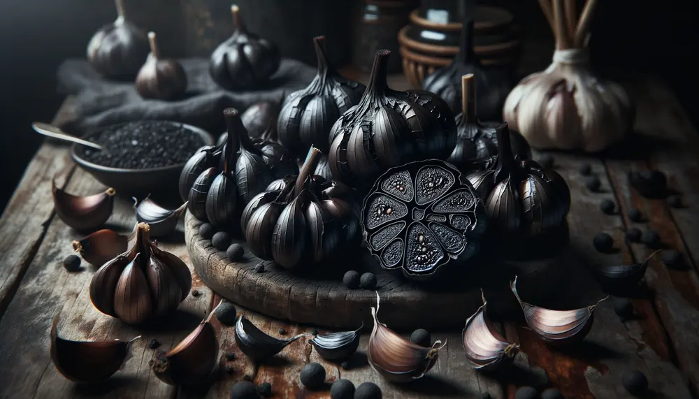
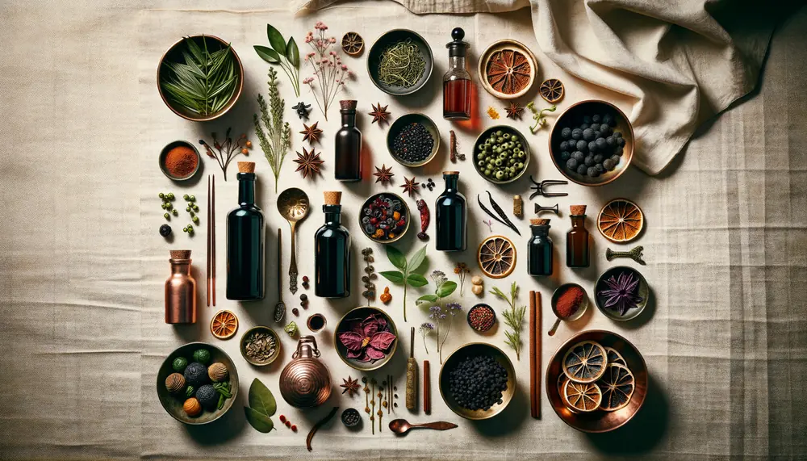
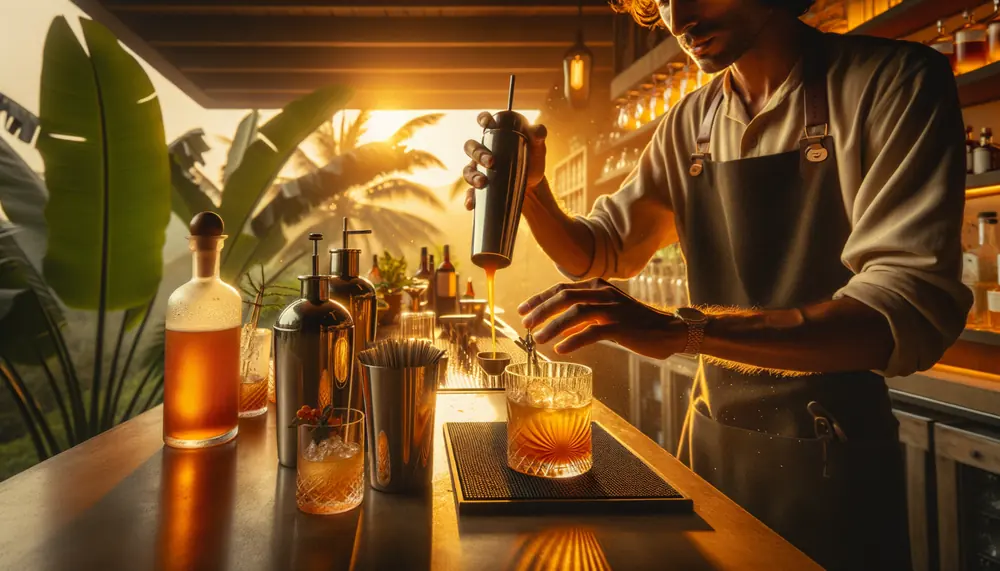

Colombia importa jarabes
de España.
Nosotros los fabricamos aquí.
Maia Botánicas fabrica jarabes clarificados artesanales, fermentos de precisión y extractos botánicos usando ingredientes colombianos — el hibiscus, el lulo, el corozo, la pasiflora — y los envía al mundo. Incluso de vuelta a España.
Hibiscus, lulo, guanábana, corozo, maracuyá y más
Formulados para bares, hoteles y programas premium
Decoraciones de barra de origen tropical colombiano
Sazonador tropical de chile y limón, propiedad nuestra



Colombia tiene los ingredientes.
Faltaba el fabricante.
Los mejores bares de Colombia usan jarabes clarificados importados de España o Europa. ¿Por qué? Porque nadie los fabricaba aquí con calidad B2B. Maia Botánicas resuelve eso — producción local con manufactura contratada, botánicos colombianos auténticos, y la misma consistencia técnica que exige cualquier programa de coctelería de autor.
Cuatro líneas de
inteligencia botánica
Desde concentrados técnicos para producción a escala hasta sazonadores artesanales con identidad colombiana — todo fabricado localmente con ingredientes de origen verificable.
Concentrados Clarificados
65° Brix, cristal claro, compatibles con carbonatación y dispensación en barril. Hibiscus (anthocyanins 1.5-2.2%), lulo (62° Brix, pH 3.2), maracuyá, guanábana y más. Shelf-stable, export-ready.
Jarabes Artesanales
Jarabes de coctelería para bares, restaurantes y hoteles. Formulados para consistencia batch a batch, sin artificiales. Hibiscus, tamarindo, corozo, ají tropical y mezclas de especias de la Sierra Nevada.
Garnishes Deshidratados
Decoraciones de barra premium de frutas y flores tropicales colombianas deshidratadas. Flores de hibiscus, lulo deshidratado, corozo y frutas Caribe. Presentación boutique para coctelería de autor.
Majín
Sazonador tropical de chile y limón — el Tajín colombiano. Receta propia, identidad única de búsqueda, ideal para coctelería, snacks y gastronomía tropical. Packaging boutique, marca registrada.
El proveedor que tu barra
ha estado esperando
Nuestros jarabes clarificados artesanales están diseñados para cocinas y barras profesionales que exigen consistencia, sabor auténtico y origen verificable. Somos el proveedor de referencia de El Sanatorio y operamos en el ecosistema LlevaLleva para entrega B2B en Colombia.
Fabricado en Colombia, para Colombia
Manufactura local contratada, sin intermediarios de importación. Entregas más rápidas, precios más competitivos que los importados de España o Europa, y una historia de origen que cuenta tu menú.
Consistencia técnica B2B
Cada lote documentado con COA (Certificate of Analysis). Brix garantizado, pH controlado, sin variaciones sensoriales. Lo que funciona en tu primera muestra es lo que recibes en el pedido 50.
Disponible vía LlevaLleva
Nuestra línea está en la plataforma B2B LlevaLleva — el marketplace para chefs y restaurantes en Colombia. Catálogo actualizado, pedidos recurrentes, entrega directa, suscripción HORECA mensual disponible.
Muestras para bares calificados
Ofrecemos muestras a barras y cocinas profesionales. WhatsApp directo o formulario — respondemos en menos de 24 horas. El programa Sushi Pop usa nuestra línea de fermentos asiáticos colombianos.
Fabricados en Colombia,
enviados al mundo
Nuestros productos están diseñados para exportación desde el origen: documentación completa, cumplimiento de estándares internacionales y acceso a mercados vía CEPA Colombia-UAE (libre de aranceles), el mercado RTD de USA y los programas HORECA de Europa.
Ver condiciones de exportación →Acceso vía Colombia-UAE CEPA. Cero aranceles sobre ingredientes alimentarios colombianos desde 2024.
Mercado de syrups premium para coctelería sin alcohol en crecimiento exponencial. Ingredientes colombianos como diferenciador.
Ingredientes colombianos de origen verificable para distribuidores gourmet, hoteles y bares de autor europeos. FOB Cartagena.
¿Listo para llevar Colombia a tu portafolio?
Muestras B2B, cotizaciones de exportación o simplemente una conversación — respondemos en menos de 24 horas.